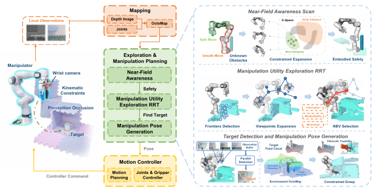
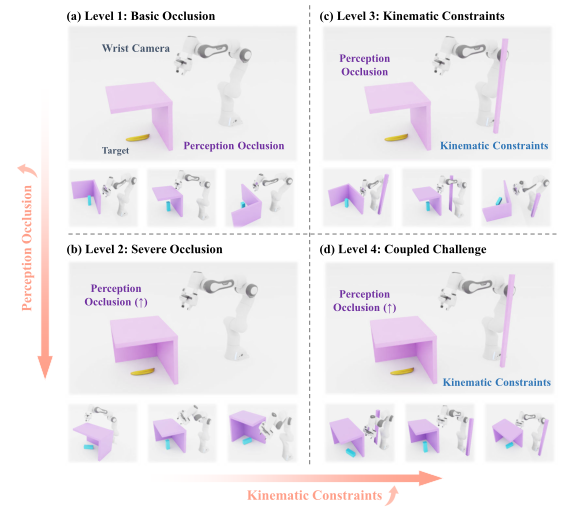
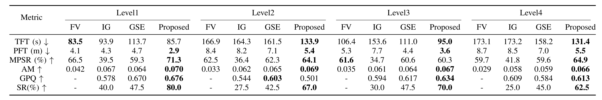
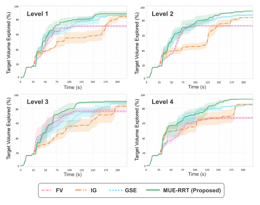
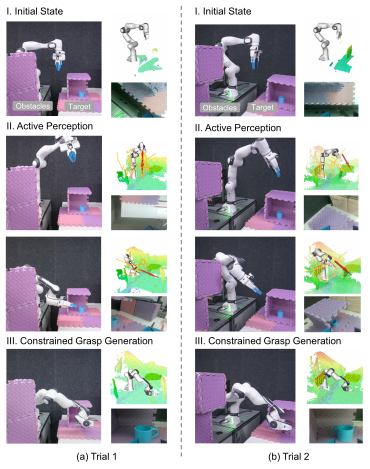

ICRA 2026 Accepted Paper
COMPASS: Confined-space Manipulation Planning with Active Sensing Strategy
* Equal contribution. † Corresponding authors.
Abstract
Manipulation in confined and cluttered environments remains a significant challenge due to partial observability and complex configuration spaces. Effective manipulation in such environments requires an intelligent exploration strategy to safely understand the scene and search the target.
We propose COMPASS, a multi-stage exploration and manipulation framework featuring a manipulation-aware sampling-based planner. It first reduces collision risks with a near-field awareness scan, then uses a multi-objective utility function to find viewpoints that are informative and conducive to subsequent manipulation, and finally generates manipulation poses that respect obstacle constraints.
Across a progressively challenging confined-space benchmark, COMPASS increases manipulation success rate by 24.25% over geometric sampling-based exploration in simulation. Real-world experiments further demonstrate active sensing and manipulation in confined environments.
Method

Near-Field Awareness
Wrist-centric scanning builds a local collision map before large motions, reducing risk in initially unknown spaces.
MUE-RRT Exploration
Manipulation-Utility Exploration RRT balances information gain, motion cost, manipulability, momentum, and task guidance.
Constrained Grasp
Candidate grasps are refined with inverse kinematics, approach direction, and whole-body collision constraints.
Benchmark

The benchmark contains four progressive levels designed around two core difficulties in confined-space manipulation: perception occlusion and kinematic constraints. Levels 1 and 2 increase the severity of occlusion, while Levels 3 and 4 introduce and then couple tight kinematic constraints with occluded target search.
Results


COMPASS consistently improves exploration efficiency and manipulation success by selecting viewpoints that are not only informative, but also feasible for subsequent motion and grasp execution. The results show that explicitly accounting for manipulation utility helps the robot avoid locally attractive but kinematically poor views, leading to safer exploration and more reliable confined-space manipulation.
Real-World Trials
